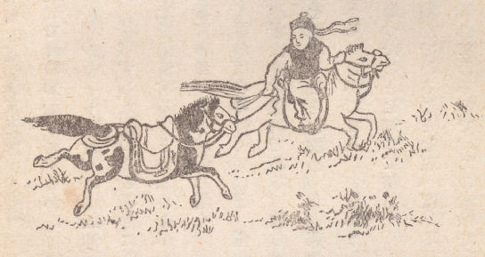

モンゴルに医者は多いー大部分は僧侶ー患者の家に泊まり込むー扱い易い患者ー水浴の療法の信仰ーモンゴル人はほとんど全部疾患に悩むー宣教師は医者に転業ーモンゴル人・伝道会医師を嘆賞すー成功した眼の手術ー朝の散歩にモンゴル人の疑惑ー夕方の乗馬ー書くことー宣教師はスポーツマンたるべからずー疾病・モンゴルに蔓延すー医術の宗教的要素ー脈をみるー外用薬をのむー漢人商人に瞞される患者ー不思議な病例ー死にかけた支那人ーガルバーニ電気に対するモンゴル人の見解ー占卜ーお手本に医者自らの薬を用いるー医術の知識は民衆の好意を得るに役立つ
もしこの人煙希薄な邦土における住民の一階級に「群をなしている」という言葉を用いても間違いないとすれば、モンゴルには土民の医者こそ群をなしていると言える。彼らはほとんどラマである。己の職業以外に医術を行う俗人もあるにはあるが、医者の大部分は僧侶である。その理由は不思議ではない。まず第一に、ラマの生活は有閑のそれであり、医学の知識を得る余裕がある。第二にラマは成人してから、家庭の管理や政府の義務に煩わされず、俗人の場合よりもいっそう思いのままになる時間を有し、医術を施す機会が多いのである。第三に、モンゴル人は医術と祈祷とは別個のものと考えること少なく、僧侶の医者は自ら両方のことに加わって、一方医術を行うとともに他方宗教儀式を執行するので、俗人にして有利な地歩を占めている。
これらの人々が、どの程度まで真の知識を有するかは、言明しがたい。彼らは完成した医学体系を有するものの如くであるが、少なくとも部分的には無知もしくは迷信以上の優れた基礎を持っていない。奇妙なことには、診察する人間のある場合に、患家に行って泊まり込み、治療するまで、もしくは医者が匙を投げるまで逗留する、ということが行われる。
概してモンゴル人は扱いやすい患者である。彼らは信じやすく、医薬に多大の信仰を有し、大量の薬も容易に服用し、薬が飲みにくければ飲みにくいほど、信頼の度も大きい。モンゴルの医者はある一点において合理的で、モンゴルの患者はまた常識的である。彼らは水浴療法を深く信じている。医者は患者にどこそこの温泉又は冷戦を試みることを勧め、北支那やモンゴルの有名な温泉には、入湯の病人中に、多数平原の住民を数えることができる。もちろんこうした粗末な水浴法施設で快治しないものもあるが、大部分は効き目があったことを知って帰る。と言うのはモンゴル人のほとんどが不潔の為に蔓延発生する皮膚病に悩んでることを思えば、不思議がるには当たらぬ事実である。
モンゴルの住民は少数で互いに離れているので、この意味でモンゴルは外国の医薬伝道に都合の良い地域ではない。しかし、ともかく住民に出会えば、彼もしくは彼女は必ず疾患に悩んでいると言って差し支えなく、一地点に見出されるべき患者の予想数は全住民の数に等しい、ということを忘れてはならない。
モンゴル語を話し、薬箱を携えた外国人宣教師が草原のどこかに姿を表せば、ニュースはたちまち遠方に広まる。話は転々するうちにだんだん大きくなり、数日たつと特別の治療能力があるように信じられ、その力に関する誇張された風評と薬や処置の神妙を伝える大げさな話のみが喧伝される。

（医者を迎えに）
宣教師が自分を治療に来たばかりではない、キリスト教を教えにきたのだと主張しても、それは何にもならない。彼らはその必要を感じない。苦痛を免れるのに一生懸命なのだ。彼らは宣教師を医者として見、医者としてこれを語る。事実、彼が医者である限り必要とするのである。例えば住民の多い寺廟・衛門の集会・廟会などモンゴル人の多く参集する場合のごときは、一日に訪れる患者の数は極めて多数にのぼり、これに接する間にほとんど宗教の教えを説く暇がない。あるものは遠路はるばるきたって、日時の余裕もなく、そこそこにして再び家に帰ってゆく。あるいは仕事の合間にとび出してきて、時間までに帰らればならぬもの、先客が診療受けている間いつまでも忍耐強く、ーーーイライラしているものもあろうがーーー順番の来るのを待つもの、こうした場合、宣教師は医者に没入してしまう危険があるのだ。
しかし、宣教師に対する待遇は、至る所かならずしも同一ではない。概して初めて訪れた地方では、熱心に診察を受けようとする人々が山のように集まるが、その大部分は不治の病を有しているので、まもなく外国人は何でも治せるという評判が真実でないことを知り、ほとんどもしくは全く手のつかぬのを見て取って、漸次脱落していく。二回目にここを訪れるといくらか様子が変わり、三回目の訪問までには民衆の観念はかなり正しくなって、多く治癒されるもののみがやってくる。
薬品を携帯し若干の病気を治せる人、患者のためを図って辛抱強く熱心に尽力するひと、ことに貧者に対しても金持ちと同じように見てやり、不潔な入浴もしない人々のなおざりになった嫌な腫瘍を潔めて治療する人、こうした人に対するモンゴル人の讃嘆は絶大なるものがある。金銭や代償を要しないということは容易に信ぜられず、ようやくこれがただキリストのためで他の何者をも求めないで行うと信じられさえすれば、彼らを見る民衆の目はこうした成果を生んだ宗教を賛美するに至る。しかしモンゴル人の意見によれば、これではあまりによすぎる。信じ得ないのである。遠い国から来た人々が、旅の装い調え薬品を準備して、至る所歩いて治療してやり、しかも金銭を求めず、なんらの報酬も受け取らないーーーモンゴル人は信ぜられないのだ。これを命じまた促した宗教を説いても、そのを理屈は理解できても、いざとなると首をひねる。もし遠い国の遠い時代に在した昔の仏聖に関する事蹟として、聖典で晴読むなら信じられもするが、今の世にこの国で、しかも己の目で見ようとは、彼の信念とあまりにもかけ離れている。それで彼は自己流の理由を考え出す。支那の近くに住んでいる者や、自らもしくは友人がしばしば支那に訪れたことのあるものは、多分外国人が民衆の眼をくり抜いて写真の薬剤を作る話を聞いている。また白内障のカウチング手術を聞いていたり、あるいは施術を見ているものは、それが良いことだと知りもし、信じもしようが、手術を見ないで単にその話を聞く友達や隣人は、これを持って己の疑惑を十分に裏書きするものと確信する。モンゴル人の間に噂が立つと、その感化や事業に偏見を生ぜしめるものであるから、モンゴル宣教師がこれを避けんとすればよほど注意が必要である。
かって私は一モンゴル人のゲルに数週間滞在したことがある。年の瀬も迫る頃であった。夜の闇がすんだかと思うとまたまもなく日が暮れる。実際夜も長かったが、不快な貧しいゲルや疑い深い仲間等の不満足な環境にあったこととて、夜は一層長々しく感ぜられるのであった。朝日が昇るとただ私は煤煙を逃れて、テントに近い低い丘陵の尾根の上に行くことを、何よりも嬉しく思った。しかるにおそらく外国人にとって最もありふれたこの事が、モンゴル人にはなんとも説明がつかなかったのである。日の出と共に寝床を起き出て、当てもなく丘に登る底意！何か悪事を目論見にのぼるに違いない。密かに土地の福を持ち去るに相違ない。しばらくこのことが続いたが、モンゴル人はいずれもこれに疑惑をを挟み、一方知らぬが仏の外国人は毎日決まって出かけて行った。とうとう一人の酔漢が口を滑らして、住民は外国人の特別な朝の丘の上の散歩を土地の凶兆と信じていると公言した。この連中のところになおもを逗留するために、私は朝の外出を断念せねばならなかった。
またある時、地質調査を担当していた一宣教師が、夏の夕方、日が没すると歩き回っては、二、三の石の標本を拾い上げるのであった。これから奇怪極まる風評が立って、あまねく平原上に広まった。なかんずく彼は無限の価値がある大銀塊を見つけて発掘したと真面目に想像され、その話が人々の間に信ぜられると、彼らはこれをもって費用を取らずに治療に回る理由の尤もらしい説明となし。私と医者とが特に招かれた地方では、ただこの風評が我々より数時間前に到達して先入主となったというだけのことで、何人も我々に寄り付こうともしなくなった。
さらに妻と私と、とある大きな寺院に宿営したことがあるが、長い夏の一日中、訪問客や患者でテントもわれ帰るような混雑の後に、日没頃馬に鞍を置いて短時間乗り回し、薄暗くなって帰る習慣であった。この事がラマの間に大きく動揺を引き起こし、例によって白髪三千丈式に、われわれが夜になると財宝を探しに行くとあらゆる虚妄な風評を捏造流布したーーーと後になって知った。これがあまりに甚だしいので、数日後使者が現れ、衛門当局とラマの名をもって我々に土地立ち退きを命ずるに至ったほどであった。
一見、旅人にモンゴルの人煙希薄にして無辺の広野ほど自由に振る舞いるところはないと、想像されるであろう。単なる旅行者に関する限り、まさしくその通りである。が、宣教師の場合は異なる。宣教師はモンゴル人の間にいくらでも成果をあげるために、疑惑を招くことを避けねばならず、これを避けんとすれば、丘に上り、礫石を拾い、散歩に出かけ、あるいは方向風光に興味や喜悦を示すなどのことはやってはならない。もしこれを敢えてすれば、風評流言風は直ちに広まって、結局彼の教えに対する住民の心を閉じてしまう。
もう一つの遠慮すべきは、字を書くことである。モンゴル人は外国人の字を書くのを見て極めて疑念を抱く。何をしようとしているのか？ 彼らはその仲間内で言う。土地の様子を書き抜いているのか？ 帰って軍隊の案内ができるように、道路図を作ってるのか？ 彼は手帳に土地の福運を持ち去る魔法使いだろうか？ 外国人が何か書いているのを見ると、こうした様々な質問が、彼らの間やまたその外国人に発せられる。したがってもし住民の好意を得、信頼を得ようと欲するならば、宣教師は彼らの間にいる限り、歩き回ったり、字を書いたりすることはやめねばならぬ。こうした二つの点において、境界を越えて支那に踏み込んだ瞬間に、微妙な自由が感じられ、足と筆とがまた役立つようになったとしみじみ思われるのである。
さらにもう一つ、注意を払わねばならぬ点がある。射撃は避けるべきである。モンゴル人は鳥獣の殺生戒を特に重んずるから、彼らに宗教の真理を教えんとするものは、銃器を携帯したり使用すると、その目的に極めて不利益を招く。しかしこの非難は、免れるに困難なものではない。銃が多くの場合鍋を賑わす鴨・鵞鳥・野うさぎなどいろいろの興趣を添えることは事実だが、しかし、肉はほとんど常に多大の困難なく手に入れ得るし、野鹿のごときは広い草原で忍び寄ることも非常に難しいから、銃器携帯の誘惑は最初考えるようにさして大きくはない。
モンゴルにおいて最も蔓延する疾患の一つは「ひぜん」である。モンゴル人はほとんど衣服を着替えることなく、またあまり多く水を使いすぎると、死後に魚になるという迷信を持っていて、体にしろ、着物にしろ、できるだけこれを洗おうとしない。テントにおいてはゴタゴタに密集して生活しているから、一人がひぜんにかかるとまもなく皆に伝染するに至る。これを患う家に一夜を過ごす旅人や訪問者は、毛布の代わりに衣服を借りねばならず、したがってまず確実にうつされる。何もかもひぜんの温床で、蔓延するのである。多数モンゴル人が巡礼参拝に赴くが、ただ面白さのままに徘徊するものも多い。これらがこの疾患を背負い込んで、まき散らす。しかもモンゴル人は効果ある療法を知らない。こんなに蔓延しているのが不思議なのではなく、むしろ全部に行き渡らないのが不思議なくらいである。
ほかの皮膚病も多く、これまた上に述べたと大体同じ原因によって生ずる。まず爪で掻いたりするのが小さな端緒をなし、羊皮の汚物や粗毛がこれを刺激拡大し、悪化の一路をたどる。
リウマチはおそらく最も普遍的な疾患である。土地の気候と生活様式に由来するのだ。よく晴れ渡った朝など、夏衣を着ようか、羊皮にしようかと自問自答する。暖かい日だと思えば、夏衣を引っかけて出かける。ところが突然寒い風が吹いてきて、そんな時は夕方家に帰るまで寒さを我慢せねばならない。あるいはまた、夜間馬群の見張りをすることもあって、疲労して湿った地上に横たわるが、羊皮を着ていてもすぐに寒く感ずる。
設備の整ったゲルにいても、それほど良くは無い。冬は中央に火を燃し、いずれもこれを取り巻いて座るから、前は十分暖かいが、背中の部分は寒い。ことにゲルの周囲から外に向かって常に空気が流れるのである。夏は一層悪いくらいだ。寒さを防ぐために、テントの周囲に築いた牛糞の基部は取り除かれ、さらに4インチから6インチの隙間をあけて、快く吹き渡る四方の風が入ってくる。昼の間はそれほど悪くないが、夜分になると、夏でも空気は温暖ではなく、ゲルの内部はすきま風で寒冷となる。加えて、モンゴル人の掛け布団が衣服であるため、その身体をすっぽりと覆うに足りず、どうしても肩が出るか、あるいは少なくとも充分包み得ない。この故にモンゴルにおける男女のほとんど全部がリウマチに悩める理由は、容易に理解できる。成人男女のみならず、青少年ですらこれを患っているが、これは一部若いものは薄着で寝るのが良いというモンゴル人の観念に基づくのである。リウマチはかくのごとく猛威をたくましくしており、モンゴル人が生活様式を変え、何ほどか保健について教えられるまで、おそらく変わることはなかろう。
彼ら固有の医術をもってしては、この病の根治法は無い。パン屋がねり粉をこねるように揉めば一時的におさまるから、少年少女は家族の年寄りの背中や両肩を揉むように命ぜられることが少なくない。家族は若いもののいないときは、老人は大きなV字型の湾曲のある棹で、自ら揉む。これを『リウマチ治療器』と彼らは呼ぶ。前でこれを手にして、子供らの拳同様気持ちよく自分で揉むことができる。
眼疾は極めて普遍的である。冬季白雪の広野にきらめく陽光、あるいは春秋の草原に輝く太陽は耐え難い。夏は牧草の柔らかな緑に楽しく目を休ませることができるので、やや快適である。春秋には草むらは枯れて褐色となり、ときには白茶けた色になっているので、色眼鏡をかけねば眼に快く見られない。騎馬でゴビを横断した際、不幸にも色眼鏡を紛失したことがある。この結果、眼に障害を生じて、その後十二ケ月もたたなければすっかり回復しなかった。
戸外の太陽に加えて、屋内に煤煙がある。アルガリの煙は想像されるように有害な臭気はないが、きわめて不愉快で刺激が強く、生木と同じようような影響を与える。
炎症を生じたり、疾患のある眼に対して、モンゴル人の医者はほとんど手を拱いているに近く、西洋科学に知られる最も単純普通の療法が効を奏するのも彼らにとっては驚異である。
ある時、私は、眼病に悩んでほとんど全く盲目となった高位のラマを診察させられた。下部目蓋の睫毛が延びて眼中に入り、そして彼の苦しんでいることを私は発見した。私はそれを取り除き、また、もし必要となった場合にこれを除去する方法を教えたが、その後彼の噂を聞いた時には、彼はガンジュル教を校合していた。翌年その地方を通過した際、彼は訪ねて来て眼が見えるようになったのは全く私のお陰だと言い、幾度も感謝を繰り返したのである。
春の病気、おそらくこの名称は適当であるまいが、モンゴル人生活の一特色を示すものである。一年中、春季以外は無病息災だと言う人々が多い。冬が過ぎて、年が明け始めると、彼らは病気になる。家畜も同様に患う。厳冬に耐えた多数の羊や馬が、膚をつん裂く春の寒風に斃れる。たぶん雪解けの湿気が何ほどか関係するのであろう。
瘧（おこり：マラリア熱）は多くはないが、まったく知られていないわけではない。嘗てある部族の一部に瘧が蔓延して、多大の恐慌を惹き起こしたことがある。ラマはどうしてよいか途方にくれ、これは政府の命令で支那に赴いたモンゴル兵が持ってきた伝染病に違いないと断案を下した。モンゴル人がこの病に罹って熱にうかされたら、支那語で戯言を口走ったなどと、口から口へ発作を語り伝えたほどであった。
高粱酒（ウイスキー）を飲んで生ずる病を、モンゴル語でナリと名付ける。胃の腑がすっかりやけ爛れて、何物も通らず、たとえ入ってもおさまらない。すぐにもどされて、患者は日に痩せて衰弱し、ついには餓死してしまう。私は統計を得る手段はないが、実見した患者や熱心に尋ね廻った結果、治療の可能性を確かめたところによると、この疾患で死するものは相当多数に上るらしい。
モンゴル人の婦人は頑強でよく働く。彼らは血色よく、四肢は強い。劇しい労働をし、しかも虐待されている。テント内における婦人の席は戸口の傍で、その眠るフェルトは最も薄く貧弱である。婦人は一般に搾乳と骨折り仕事を行い、ゲル内にあっては、地面の湿気と冷気を避けるのに破れた牛革よりましなものを持っていることは稀である。彼女は男子のように勇敢に鞍上に跳び乗り、平原に馬を走らせる。ほとんどわが身に留意することなく、またそうした心遣いも与えられない。ある老女が、『女はゲルの外で食わせられる犬同様の待遇を受けています』と述懐したが、少なくともそれには多少の真理がある。
その結果は予想される通りだ。婦人は強壮・頑丈・健康のように見えるが、少女期を過ぎたものはほとんど全部何か慢性の疾患を持っている。これには幾多の例外があり、特に富裕階級において然りであるが、概して婦人は男子よりも余計に苦労し、早く年を取り、若くして死する。彼らがもっと思いやりある待遇を受け、テント生活の乏しい慰労をもっと公平に分け与えられるようになるまでは、こうした点で改善される望みは先ずない。
モンゴル人の患者も医者も加持祈祷の治癒効果を信じている。医者の診察を受けると、それぞれ分限に応じて供物を行い、寺廟やラマの勤行にすがる。お勤めの性質なり限度なりが供物の価値に応じて異なることを彼らも承知している。病気全快が勤行の力によると信ずる人々は無数で、彼らが祈祷と医薬を相対立する二つの治療法と考えないで、むしろ同一物の両面であると思っている点は注目に価する。医薬は俗人的手段で、祈祷は超人にすがるのである。
寺院の勤行を頼めない人々や軽症の患者は、普通ラマに自分のテントに来て、必要な経文を誦してもらう。通常この儀式の一部に稷（きび）の種子を少しばかり撒き散らすのがある。眼の炎症を鎮めるためラマを招じて祈祷を請うた一人の男が、変なはずみでその目的をフイにした。ラマは患者めがけて稷を投げかけた、種子の一つが眼に当たって潰瘍ーーーモンゴル人の言う雲を生じて、それっきり視力がかすんでしまったのである。臨機応変のお勤めの詳細なやり方は、位の高いラマによって定められるのが普通である。活仏の中には、病人に何時全快するだろうか、どんな方法を用いたら良いか等とお伺いを受けて明快に答えるので、極めて評判の高い人々がいる。
『驚くことはない、薬を飲んで、祈祷をあげて貰うがよい』
ほとんど決まり切って、こう答える。巡礼を命ぜられることもしばしばあり、効験いやちこだという評判を立てさせる。嘗て私は、数百マイルの巡礼に脚の役に立たなくなった男を旅に出そうと、真面目に言っているのを耳にした。彼の忠告者は、もし彼が往復這って行ければ、全快の見込みがあると本気で考えているらしいのだ！
また、歯痛を治すために長途の巡礼を終えて、今帰宅したところだと言う男に会ったことがある。彼は少しも良くならなかった。歯抜きで数秒間作業した方が、その踏破した数百マイルよりもはるかに救うところ大であった。
モンゴル人は予防薬にはあまり信頼していない。彼らが訪ねてきて何か食当たりについて訴える場合に、特定の飲食物を避けるように語っても、彼らは揶揄されていると考える。誰かのリウマチを治してやる、湿気と寒気を避けるように教えると、彼は夫子自ら治療法の弱点を認めているのだと思う。怠惰にしていたり座業の結果病気になった場合に、薬の他に運動を命ずると、彼は下手な医者だという風にとる。彼らは慣習的に注意を軽蔑無視する傾きがあるので、ある種の疾患を救ってやろうとしても無駄になってしまう。しばらくすると、不注意のためにまた前と同様に悪くする。
多くの場合、モンゴル人が医者にかかる時は、ただ手を差し出せば、医者に脈を見るだけで、病気を言い当てるのみならず、どうすれば癒るかも述べ得ると予想している。医者が片手の脈を見終わるや否や、患者は別の手を出してそれも見てもらおうとする。したがって外国人が差し出した手を退け、質問をはじめ、診断を開始すると大いに驚いた様子を見せるのである。また、脈を看るだけで足れりとする際も、これに劣らぬ驚愕の風を示す。
『どうして、この病にかかったか』と問えば、往々にして珍しい迷信的な答えを得る。一人の男は星と星座に罪を負わせた。また子供の時いたずらで、地面に穴を掘ったり、丘の草むらを刈ったからと答えたものもあるが、地を掘れば蚯蚓（みみず）を殺すから、病気をもって地を掘った罪と見なしているのは了解に難くないが、丘の藪草を切ることが罪といかなる関係があるかは、土地の神の財産を盗むと考えるより他に理解し得ぬ。医者にかかることも、モンゴル人に言わせれば当の医者に直してもらうのが運命であるとの信念を強調するもので、快癒すると、右の医者にあたって治ったのは、かつて行った祈祷のおかげだと言うことが多い。
モンゴル人治療上の一つの難点は、彼らが薬を与えられると、往々にしてこれを使用する場合医者の処方を全く無視することだ。また外国人に薬を求めてこれを得るや、その得たことに驚き、あるいは隣人の嘘に縮み上がり、もしくはその外国人が彼の脈を見なかったり、見ても片方だけであった事実に恐れをなして、注意して薬を片付け、全然服用しない患者もまれではない。
モンゴルの住民は数も少なく互いに離れているので、一カ所に長く滞在することはほとんど不可能であるから、従って引き続き処置を要する疾患の治療に薬を残して去ることもしばしば必要とされる。
ある夕方、テントの戸口に座って、出発してから用いるようにと薬を与えたゲルのほうを眺めていると、数人の子供が飛び出し全速力でまっすぐ私のほうに来るのを認めた。着くよりも前に、早くも私はかねてから恐れていたことが、とうとう起ったなと直覚した。私は誤またなかった。最初に子供たちが、ついにでそのあとを追って一人の婦人が、いずれも息を切らしてやって来て、小さい子供らが薬瓶を見つけ、ウイスキーだと思って飲んでしまったというのだ！ 子供らのやったことを見つけて、心配になった母親も一体何を飲んだか試そうと舐めてみた。一家が毒死するのではないか、どうしたら良いのか教えてほしいという！ 幸いに薬は致死的なものではなく、また飲んだ量も少なかったので、害は生じなかった。しかしこの事件は常に警戒すべき危険を示すものであって、病気自体にきわめて単純であっても、不注意な人々に全治するだけの十分な量の薬を残して去るのが不安なため、治しがたい場合が少なくない。
外国人はしばしば荒唐無稽な、笑うべきあるいは不可能な療治を求められる。一人の男は利口になりたいと欲し、あるいは肥満したい、不健康をなおしたい、タバコをやめたい、酒をやめたい、腹の空かないのようにして欲しい、茶をやめたい、さては競技に勝つように強くしてもらいたい等というものもあった。男の大部分はアゴヒゲを生やす薬を要求し、男女老若何れもが外国人のように肌を白くすることを欲している。
モンゴル人医者の方か報貨は重要な事項である。ときには定額の金銭であることもあり、普通は羊一頭もしくは数頭の家畜という場合が多いが、いずれの場合にもほとんど治療の範囲による。概して薬礼は極めて多額で、暮らしの楽な家でも病気に見舞われると、高価な医者の勘定書が舞い込むので苦しくなることがしばしばある。私が薬価を取らないことは知られていたが、それでも常に『ハタック』を差し出されのであった。これは価格¾ ペニーばかりの一種の絹のハンカチでモンゴル人が外に何か頼む際にあらかじめ必ず持参するらしい贈り物だ。私は先ず受けてから返却する。そしてあなた方は習慣に従ってこれをくださるが私も自分の習慣によってお返しする、というのである。
裕福な人々は私に治療の効果を上げさせようと思って多大の金品を贈ることがあり、極貧者でもつきものの『ハタック』以外になにか添えて出さぬことはまれである。
もっとも普通の贈り物は厚さ一インチばかり、小さな長方形のチーズであるーーーモンゴル人の非常に賞美する食べ物だが、実際は貧弱極まる、不潔な、無味なもので、外国人にとっては食しがたい。
チーズよりいくらかマシなのは、『私のお茶のために』しばしば贈られる塩の塊である。もし私が塩を入れないでお茶を飲むというのが嘘でないと知ると、寄贈者の感情を害さないで断ることができる。
寺では、廟会の時期に、時々若いラマが懐中から『スコーン菓子』のような、いかにも堅そうな光った小麦のビンズを取り出すが、これなどはみるから不消化らしい。また、おそらくモンゴル医者の経験から判断したものか、なんにも言わずに自分の家に来て任せてくれ、酒や宴会や賭博で自由に振る舞いはするからと請け合って、さも私に乗り気にならせる大きな贈り物したかのように考えていた男があった！
モンゴル人はいちど絶望だと知るときわめて平静にこれを迎える。死にせよ慢性の病にせよ、その運命に黙従する。そして医者も患者も、数次の失敗の後、この悲運をもって定命と諦め、医者の力はこれに打ち勝つになんら欠けるところはなかったと考える。
モンゴル人の患者は極めて信頼しやすく、まんまと下心のある漢人の商人や医者のカモになる。彼らは支那に近接するモンゴル地方に赴き、各種各様の膏薬を売りさばくのであるが、臆面もなくデタラメをいい、この薬さえあれば天寿のある限り歯の抜けたり悪くなることはないと保証するかと思うと、あるいはまた別の薬を出して、どこでも患者の体にあてればよい、そうすれば自然に患部を見つけ出してそこに動いて行き、病を治すと断言する。こうした売薬は多少の出銭を要するが、まだ害のない方である。
それよりもさらに由々しい事件は、あるラマのそれであって、彼は北京で一外国人に目の手術を請うて拒絶され、失望のあまり中腹で故郷のモンゴルに帰り、口の達者な漢人の医者の手にかかった。医者はラマの金を巻き上げ、望みの手術をしてやったが、全く眼をつぶしてしまった。漢人医者に失敗したこのラマは、申し出の手術を不可能と宣告した熟練の外国人を、今更のように賞賛するに至った。
奇妙な病例に出会うことも時折ある。顎骨の疾患に冒された女があり、治りはしたが堅く歯を食いしばったままになった。全然口を開くことができず、歯の隙間から流動物を口中に吸い込んで数年間生きていた。彼女は口に入れる食物の自由に通るように、歯を一、二本抜きたいと希望した。歯はいずれも並びよく美しく、かつ口を固く閉じているので、その内一本の歯を捉まえることはやや困難な仕事であったが、老女の勇気は賞すべく、ついに長年望んで果たさなかった固形食物の通り道を開けてしまった。
はるばる家郷をあとにしている一人の老人は、馬を乗りまわす時に、鞍の前xに奇妙な杖を吊り下げていて極めて異彩を放っていた。この棒は脱腸を押さえるために梃の用に使われるのであって、長い間の習慣で、騎上のまま極めて器用に操作するように熟練していた。
犬に手を酷く咬まれて、その動物の皮から毛をとって傷口を押え、『咬んだ噛んだ犬の毛』の治療効果を信じて疑わぬ老ラマもあった。
私は一度、聾で啞の男にあったことがある。彼は教育こそないが、非常に敏捷で賢明であった。彼はいつでも容易に、手真似で仲間のモンゴル人と意思の疎通ができ、私もなんなく幾多簡単な質問をし、また彼の返答を了解できた。私のテントの外で埃にまみれて座っていると、彼の父親から使いが来て、羊が数頭行方不明になったと伝えた。手を一度廻して、何物か探すように困惑の風で周囲を見るーーーこれでことは足りた。彼は一座に入って静かに我の話すのを見ていたが、意思の通じた瞬間、非常に興奮した様相を示し、何かわからぬことを叫び、煙管の吸殻をたたき、長靴にさして、鞍に跳び乗るや、失える羊を捜しに、ようやく迫る暗黒の内に走り去るのであった。彼が特別の才能に恵まれていることは人々の皆認めるところで、彼は社会の有能有用の一員とみなされてるのであった。
ある所で、年のころ五十ばかり、高さ四尺くらいの男が私のテントを訪れ、座り込んだのを見て、驚いたことがある。彼は膝で歩いていた。十九くらいの時に、足首のところで足を失い、今では長年の練習でそれがなくとも歩けるのである。彼は非常に巧妙に歩行し得たが、私は馬に乗るにはどうするか見たいと思った。それはおとなしい馬であった。馬に近づいて腹帯を締め、片方の膝を鐙にかけたかと思うと、次の瞬間にはもう鞍におさまっていた。靴の中で切り口より先の足首のない部分は駱駝の毛が詰めてあり、馬上靴を鐙にかける時は、不具であることはわからない。
左手に親指の二本ある男に会ったこともある。一つは正常の大きさで、あるべき場所にある。関節は少し硬い。小さいほうの親指は、大きほうの傍から枝のように出ていて、完全に見えるが、関節が動かない。数日後、同じように奇形の少年が私のテントを訪れた。付き添ってきた母親は、余分の指を切断しほしいと望んだ。いずれの場合にも、奇形なのは片手に限られていて、他方の手と足は全く普通通りであった。
私の見かけた悲劇の一つに、臨終の迫った病の漢人のそれがある。彼は四人連れの一人で、モンゴル人が衣服にする毛皮の仕立てに出かけた。彼はアヘン中毒で、おまけに不治の下痢を患っている。この時たまたまモンゴル人のところに逗留して、その家族に毛皮を仕立てようとしていたのであるが、モンゴル人は彼の死にかけているのを見て、死んだ場合の掛かり合いと失費を恐れ、立ち退きを命じた。
仲間は牛車を借りて運び出し、道の五マイルか十マイル、粗雑な車に揺られ、焼きつくような太陽に苦しみながら、知り合いの漢人が数名井戸を掘っている場所に達した。彼らは自分でテントを持っていた。おそらく白木綿でできた襤褸の、雨風も吹きさらす、この上なく見窄らしいものに違いないが、哀れな男はこの中で死ぬことを許して貰いたいと望んだ。
それは暗澹たる一幅の絵であった。明るい夏、百花繚乱たる緑の草野、畜群は生い茂る牧草に雀躍し、快活なモンゴル人は馬を乗りまわし、はるかに燦々たる陽光を浴びて真っ白のテントが輝いている。この最中に、家郷近親を遠く離れて寄る辺なき男が、瀕死の病の床につきながら、みすぼらしい仮寝の宿より追い出され、身を横たえ息を引き取らんとする場所を求めたのである。モンゴル人は客を厚遇する人種である。されど夢、彼らがもとにあって病を得るなかれ。
外国人の携帯する治療器具のうちで、ガルバーニ電池ほどモンゴル人の興味をそそるものはない。これを見て効果を確かめたモンゴル人がほとんど例外なく、被疑者の糾問にうってつけのものだと述べるのはむしろ奇妙なほどである。鞭打ち刑や杖刑や、さては懸垂の刑よりもはるかに効果があるだろう。この責苦を行えば罪あるものは『白状』せざるを得ない。英国では、罪人の刑罰として吊架にかける代わりにガルバーニ電池を使用せよと主張したものがあるが、英国人とモンゴル人の心理に符号を認めるのは興味あることだ。
モンゴル人医者はガルバーニ電気の性質を全然知らぬわけではないらしい。磁鉄鉱を粉末とし、腫れ物の特効薬として用いる習慣があると言われ、また耳の悪い人は、磁石の小片を両耳に挿入し、口中に鉄片を噛むようラマに勧められている！
モンゴル人のうるさくせがむものに占卜がある。外国人のように博識で豊富に道具を備えたものが、占いを立てらぬとは、彼らとしては思いもよらない。従って外国人を訪れては、どの方向に宿営すれば幸運にして金持ちになるか、旅に出た男はいつ帰るか、兵隊になった息子や良人なりからなぜ便りがないのか、どこに井戸を掘れば浅くて良い水が豊富にでるか、某某の思惑取引をやって成功するだろうか、これこれの旅に出て良いか悪いか、失った家畜をどの方向に探したらよいか等々占ってほしいと頼むが、これよりも更に多いのは、老若男女を問わず、運勢を見てもらいたいという人々である。その外国人が全くそうした技術を知らぬと告白すると、のけそるばかりに驚き、それよりも信じられぬといった風をする。彼らはその占卜はできぬというのを疑うばかりで、ただ怠惰か素直でないのだと考え、何とかして翻意させようと懇願に懇願を重ね、何遍でも頼みにやってくる。ある外国人、これは宣教師ではないが、自ら語った話によれば、必要なモンゴル人の頼みに根負けして、失った駱駝の卦を立てることを承知し、動物は前日の疾風を避けたに違いないと判断して、その方向にモンゴル人を探しにやったというのだ。しかるに果然駱駝はそこに発見されたので、外国人はたちまち神易の大家だという評判が高まった。
大体において、どこに行っても私は歓迎され、信頼をもって遇せられた。彼らが全く見も知らぬ他人の手から、少しもわけのわからない薬を進んで受け取ることは、時折私も不思議に感じた。最もどこでもこのように信頼されているのではない。一両度、臆病な患者を治してやりたいばかりに、他に元気付ける方法もないままに、自分で薬を服用して見せ、模範を示し毒薬ではないという証拠を明らかにしたこともある。彼らが容易に私を信頼した理由のひとつは、その間に進んで入ったから、彼らもテントの周囲を廻り背後に何ら恐るべき秘密のないのを知り、内部に入って持ち物をことごとく目撃していることに基づく。彼らは私が全く自分らの手中にあることを覚り、おそらく私に害心のないのを推論したのであろう。けだし万一私が悶着を起こせば、彼らの承諾なしでは一歩も動けなかったのである。もちろん、利口になる薬くれとか、体の斑点や痣を取り除いては欲しいとか、想像的な病気を治してもらいたいとか、失った家畜を探すのに易を立てて助けてくれとか、ささいな難題や迷惑はあった。途方もない言動ぶりを発揮し、立ち去ろうとしない酔っ払いのモンゴル人も、災難であった。土民の迷信的な恐怖のために、絶えず行動に制限を被るのもまた、長い間には煩雑であるが、伝道の見地からすれば、民衆の信頼と好意を獲得する多大の利益に比して言うに足りない。
私はモンゴル人中より未だ宣誓者を得ないが、ただ多数のものが救いの途上にあり、福音の使いに耳を傾ける人々の多くが、明らかに関心と友愛を示している事実は、神のお恵みのもとに主として私が神の間近きにある事実を説きつつ、彼らの疾病の医療に努力しあることに帰し得ると述べてはばからない。
(EOF)